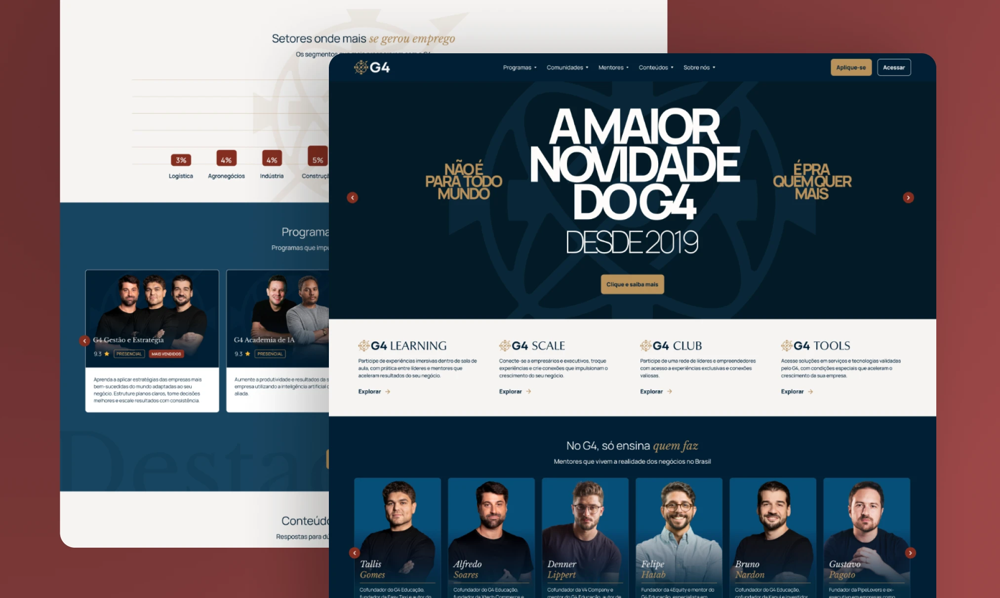

Institucional - Com Falcotec
G4 Business
Foco: experiência, consistência e conversão em páginas e jornadas.
Entregas: estrutura de navegação/UX, UI e implementação com ajuste fino e responsividade.
Impacto: comunicação mais clara e base sólida para aquisição e escala.
Ver projeto